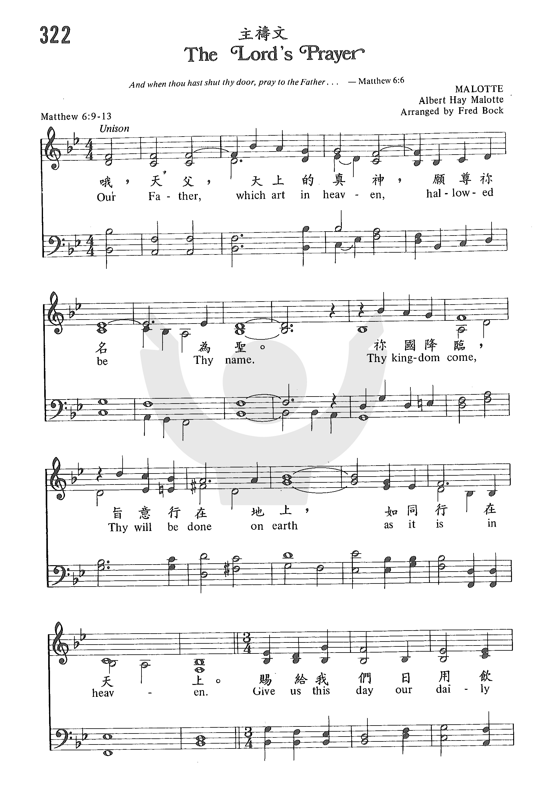
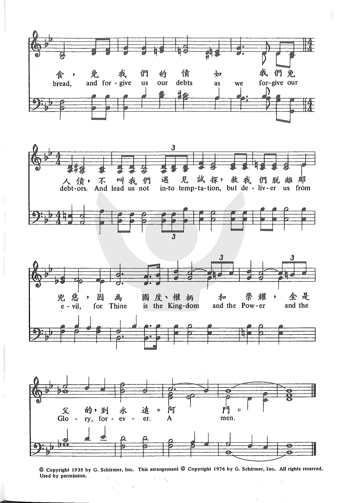
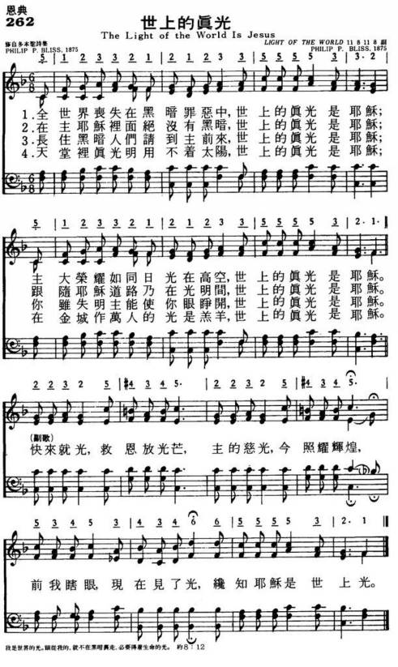

|
|
|
|
Our Father, which art in heaven, |
阿們。 |
|
|
|
|
|
|
|
|
|
|
Our Father, which art in heaven, |
阿們。 |
|
|
|
|
|
|
经文：“我们在天上的父，愿人都尊你的名为圣。愿你的国降临。愿你的旨意行在地上，如同行在天上”
(太6：9一
10)。
主祷文本是主耶稣教导门徒祷告的话，载在马太福音第6章9至
13节，为信徒非常熟悉且最常背诵的一段经文，也可作为祷告的总结。在公共礼拜时如能组织信徒齐唱，一定会增加崇拜精神，激发人们的虔诚。《普天颂赞》(旧版)
内，还有第539
首用启应的方式来唱《主祷文》。
《新编》所采用的调为格列高利(事略参阅第7首)颂调。格列高利曾集叙利亚、巴勒斯坦、希腊、罗马的音乐大成，编成颂歌曲谱，在拉丁西教会广泛推广，沿用至今
(见第7首注①)
http://www.hymncompanions.org/Dec/14/stream.php
主耶穌在世時，曾教導門徒如何做禱告，在馬太福音和路加福音都有記載。
這首歌詞是根據馬太福音 6:9-13。
近年來，有不少聖樂家為「主禱文」譜曲，但最熟悉的是本曲。
作曲者梅樂（Albert Hay Malotte,1895–1964）的生平不詳。
原為獨唱曲，經哈斯達（Donald Paul Hustad, 1918-
）改編後在聖詩集中被採用。
哈斯達出生在美國明尼蘇達州，1963年，他獲音樂博士學位，他是美國風琴師協會會員，也是英國皇家風琴師學院院士。
1942-45年，他是ABC廣播電台「俱樂部時間」節目的音樂指揮。
1945-53年，他是慕迪聖經學院的聖樂系主任。
1950
-63年，他指揮慕迪合唱團在國內外旅行演唱。
1961-67年，他任教于浸信會神學院音樂系。
他是一位優秀的司琴和合唱指揮，作有許多風琴曲及合唱曲。
他也是浸信會詩集的編輯委員之一，並協助一出版社編輯六本聖詩集。
在舊版的「普天頌讚」中曾使用啟應的方式來唱「主禱文」，後則改用葛利格（St.Gregory, 540-604）的頌調
（Gregorian Chant
又稱平詠）。葛利格是政治家，神學家和音樂家。他曾任羅馬行政官，後捨棄名利，將全部財產捐給修道院並任院長。
590年起，他任天主教教皇駐君士坦丁堡的代表，當羅馬被倫巴底族入侵時，藉他的威望，他大力挽救狂瀾，保全了歐州的文化，奠定了基督教在歐州的基礎。他對教會音樂也有很大的貢獻。
他綜合了猶太教的聖殿崇拜，希臘的歌劇和頌詩，以及教會原有群眾歌詠，創了單聲部平詠的歌調。
中文的「主禱文」歌譜，亦有多曲，一般詩本常用的是中國曲調，1973年由麥金年（James
C. McKinney）配和聲，1993年，甘彼得（Peter
Kam）又重編。
其中有一首是楊劼和卲家菁合作的，旋律優美。
（可在『YouTube
』上聆聽此歌）
Printable scores: PDF, MusicXML
Audio files: MIDI, Recording
四五千年前，以色列人已經經常歌唱。
作為口傳歷史的民族，他們的歌唱，和中國人的山歌有甚麼共同點？
以色列人所唱的《詩篇》，有甚麼歌曲到了今天仍然在唱頌之中？
我們今天如何去唱這些四五千年前的作品，會不會已經脫離時代？
據說，打井歌，戰鬥歌都是以色列人的聖詩之一？
內容：
1)訪尋聖經音樂元祖
2)打井歌、女聲大合唱與聖殿之歌
3)以色列人喜歡詩歌，關我地香港人乜事？
4)舊約音樂會用甚麼樂器？
5)舊約聖詩點樣分？
同場加映〈聖詩少少趣〉：
A)聖詩的調名和歌名有甚麼不同？
B)〈詩篇〉竟然有151篇？
https://anchor.fm/hkhymn/episodes/ep-e17n9av
Joyful One Voice Ensemble (Virtual Choir網上詩班) 獻唱


By Joyful One Voice Ensemble
《主禱文》記在聖經馬太福音 6 章 9 - 13 節 (路11:2-4)，是耶穌成年出來傳道後，在《登山寶訓》論述最後一篇論禱告的文辭。
《主禱文》（Lord's Prayer ; 拉丁語：Pater Noster）是各宗派的崇拜禮儀中重要的題材之一。歷代不少聖樂家為《主禱文》譜曲，以不同地域，語文、樂器曲調和風格演譯出來的樂曲，不下萬千首。
本曲為梅樂（Albert Hay Malotte,1895–1964）所作，原為獨唱曲，後經不少音樂家改編為許多的樂器及聲樂合唱曲。
梅樂1895年生於美國賓夕凡尼亞州（Pennsylvania）； 是一位出色的琴鍵手、編曲家和音樂教育家。在默片電影時代，曾任幕後配樂風琴手，繼而巡迴歐美各國作風琴音樂會演奏。二次戰期間, 梅樂在特種部隊兩年，軍階上尉。服役時期與 "USO 美國勞軍組織" 遠赴歐、澳各國作勞軍巡迥表演，後來又成為加州迪士尼機構的作曲家。

Malotte版本的《主禱文》現己成為基督教教會最盛行喜愛的曲調。本曲的流傳得力於葛培理佈道會的音樂主編Richard Huggins (b. 1948?) 的推介和哈斯達（Donald Paul Hustad, 1918- ）改編為合唱曲。此曲在不少大型群眾佈道會中使用，不少宗派教會的詩集選為必唱的聖詩，深入民心。
▲
曲調以三個重複音符（Our Father）開始，把握著英語歌詞的誠懇和語氣，以4/4拍子，步步推進。下半段，改以6/8拍，旋律向高發展，進到榮頌高潮，浩氣貫長空，直到永遠 (forever)一詞。最後以悠和的亞們頌（Amen），以誠以真的長音結束，感人肺腑。唱者能以澎湃的感情自然地唱出，音樂氣氛的進動，亦得力於伴奏的編排，是大師的傑作。
▲▲
這次的獻唱，詠團的音樂總監採用混聲齊唱（unison）形色。寓意是我們（One Voice）一眾的禱告是同心合意，如新舊約經文所言：
📍＂群眾的聲音，眾水聲音，大雷的聲音。＂（啟19:6）,”
📍”吹號的、歌唱的都一齊發聲，聲合為一，讚美、感謝耶和華。”(代下5:13)。
《主禱文》源出於聖經馬太福音 6 章 9 - 13 節 及路加福音11:2-4節。是耶穌成年出來傳道後，在《登山寶訓》論述中最後一篇論禱告的文辭。原意是教導門徒如何禱告，是禱告的範本。指出真誠的祈禱應與一般宗教的禱告不同：除了對象、心態、目的不同以外，最主要的是內容不同：
天父 （Father）
天上(Heaven)，
地下(Earth)
願神的名 (Thy Name)，被尊為聖。
願神的國 (Thy Kingdom)，降臨。
願神的旨意 (Thy Will)，行在地，如行在天。
求供應 (our daily bread)，日用飲食，依時賜給。
求赦免 (our debt)，神免我罪債，我免人責。
求交托 (from temptation)，不遇試探。
求拯救 (from evil)，脫離兇惡。
最後以「榮頌 (Doxology) 」和「亞們頌(Amen) 」結朿：
國度 (Kingdom)
權柄 (Power)
榮耀 (Glory)
永�� (Forever)
亞們 (Amen)
耶穌通過馬太福音六章的《主禱文》和論述，教導我們禱告的真諦是：
● 不可假冒為善…向隱袐中的父禱告….不可重複一些空話 (太6:5-8)
● 不要為你們的生命憂慮….『我們吃甚麼？喝甚麼？穿甚麼？』 (太6:25-32)
● 你們要先求神的國和他的義，這些東西都要加給你們了。(太6:33)
(But seek ye first the kingdom of God, and his righteousness; and all these things shall be added unto you.）
通過《主禱文》最後的榮頌和亞們頌，我們確認上帝是至高主宰，成就並超過我們一切「所願」、「所求」，並發出一個長長的「誠心所願Amen」感嘆。
http://www.sooopu.com/html/301/301234.html
一班五十年前參加香港【浸會學院基督徒詩班】Christian Choir （CC）和學院參加合唱團的同學，現散居美國，加拿大，澳州及港澳各地。最近奇蹟地網上跨世紀重聚, 攀談間彷如隔世, 一切又像只是昨天。
我們心靈振震撼之際，同心以 CC 歷久不衰的聖樂事奉使命, 重燃同心歌唱熱忱。2021年月，經一個月努力, 製作好網上滙聚同唱 《奇異恩典》Amazing Grace, 並決定陸續有來。
因要趕及分別在港、加、美三地不同單位，為我們當年院牧麥希真牧師舉行追思會呈獻。懷念恩師當年帶我們CC到教會，進行詩歌佈道之情。
今年十二月，我們又完成第四首網上詩班聖曲《The Lord’s Prayer主禱文》 。
附上合唱線譜及簡譜，請各位欣賞，練習及轉發。

四千年前，以色列人已經出現第一批的詩作，而歷世歷代、各國各族的人都使用不同的詩作，配上音樂唱頌，表達他們的信仰情感。
詩歌在戰爭、動亂之中，在困苦、危難之中，在快樂、慶祝之中，都承載著人類的情感。而基督教作為延綿數千年的宗教，許多詩歌和社會不同的變化都息息相關。
https://anchor.fm/hkhymn/episodes/ep-e17nb48
香港聖詩會十多年來，一直在香港推動聖詩教育和唱頌。未來香港的
聖詩會怎樣發展，我們如何融入流行音樂、當代古典音樂、廣東音樂
藝術在聖詩之中？
聖詩，未來還會不會有人唱頌？對於香港人來說，如何改變聖詩就是「主能夠」的印象？
內容：
1) 聖詩集仲有無出路？點樣由飛紙仔變詩集？點樣幫教會更換新詩集，而不讓人覺得作品水平是「降低」？
2) 未來教會音樂會變成點？聖詩會變成小眾嗎？
3) 教會音樂版權是「無底深潭」，點算號？影印歌譜等於「偷人隻牛去獻祭」嗎？
4) 神秘欄目，敬請收聽。
最後一次：聖詩少少趣
A) 聖詩有個好伴侶
B) 點樣學聖詩？原來有聖詩學
https://anchor.fm/hkhymn/episodes/ep-e17nan4
二十世紀末端，世界越來越複雜，而傳統詩歌著重教會內部及基督徒社群，已經漸漸不能夠說服社會。
於是，基督徒開始寫出與種族歧視、貧富懸殊、環境保育等的聖詩，希望可以提倡有關議題，促進基督徒推動社會發展的心懷。
據說：現代聖詩音樂很複雜，而不同音樂流派的作品，也在教會中通行，這個年代，甚麼是聖詩？
內容：
1)最黑暗的年代，就是最精彩的年代；「因祂活著」復活聖詩與生兒育女的關係。
2)平權、環保、公義、火箭飛機聖詩，你又聽過未？
3)當代嚴肅音樂VS敬拜讚美
4)點解D老人家成日話現代詩歌好膚淺？
同場加映：聖詩少少趣
A)除了聖詩以外，還有一批被遺忘的瑰寶：禮儀樂章
B)人手一本聖詩集，就解決了版權問題？
香港的聖詩發展，起自1950-60年代繼承大陸的作品風格，至1970年代引入流行曲元素的《齊唱新歌》。
今天有一批人希望將一批非粵韻的作品重新翻譯為粵語，粵語和聖詩，到底如何互動？
據說，聖詩在香港可以在唱卡啦OK時點播，你唱過了嗎？
內容：
1)香港最地道的聖詩是甚麼？
2)演唱會齊齊唱文化，如何影響教會會眾詩？
3)粵曲？福音？福音粵曲是聖詩嗎？
4)聖詩合韻(o岩音)是否重要？甚至重要過一切其他考慮？
同場加映：聖詩少少趣
A)聖詩上Billboard打榜趣聞
B)回應聽眾：點解聖詩係四部？
自從唐朝基督教進入中國，已經有人開始唱頌聖詩。
聖詩唱頌至太平天國百萬人傳唱聖詩達至高峰，並在1930年代中國基督教文藝復興年代，達到第二個高峰。
據說：唐朝已經有人唱聖詩，太平天國也有人唱聖詩，他們到底唱甚麼？
內容：
1)唐朝已經有人唱聖詩？利馬竇教皇帝學聖詩？
2)太平天國的國歌，竟然是一首聖詩？
3)中國聖詩是否就是等於小調？
4)1930年代本色化，是否就是中國詩歌藝術的高峰？
同場加映聖詩少少趣：
A)中國聖詩集點樣排版？
B)簡譜竟然是中國獨有？
靈恩運動是二十世紀初期改變整個世界和基督教社群的重要運動，這次運動重新強調聖靈的工作。
大量短歌也從中出現。究竟這些短歌，又能不能融入「聖詩界」呢？還是我們今天都在唱這些百多年前的作品，古老當時興？
據說美國的非裔人士，許多都擁有極美的歌喉….其中的秘密是甚麼？
內容：
1. 黑人愛唱歌，由非洲唱到美洲！原來最初只是為了滿足白人水手？
2. 黑人靈歌唱得咁high，點解我地華人唱詩往往「棟篤唱」？
3. 爵士樂和藍調如何反映當年的黑人靈歌作品？
4. 黑人詩歌都是苦難文學嗎？點解佢地唔起黎反抗白人統治呢？
同場加映〈聖詩少少趣）：
A.英式記譜法與美式記譜法
B.聖詩之「領域」 Public Domain
英國人留給美國的，不只是愛於唱詩的特質，更加是在於開荒，探索的特質。
美國早期聖詩大多在帳幕中頌唱，以帶有副歌的作品為主，讓人容易上口、投入和記憶。
據說在美國獨立戰爭的時候，據說有牧師用聖詩代替英國國歌「天佑我皇」，最終免遭一死…
內容：
1. 唱一首詩歌，免殺身之禍？
2. 佈道的最佳拍檔：聖詩！
3. 副歌，究竟副不副？
4. 上帝做我好朋友？有人竟然唱”Jesus is my Boyfriend?”
同場加映〈聖詩少少趣）：
A.用五線譜還是PPT好？
B.每個年代，都有他的詩歌
英國成為了日不落帝國，聖詩也隨著英國宣教士傳到了世界上每一個角落。
無論聖詩之父以撒華茲、復興的始祖衛斯理兄弟，都使用聖詩作為他們改變社會的作品。
內容：
1. 英國的「聖詩之父」竟然不是屬於聖公會，而且是體弱多病？
2. 聖詩會否用來鬥氣？信仰爭論？神學立場大角力？你識唔識分？
3. 點解聖詩原文，好似一定係英文？點解咁多英文聖詩？
4. 英國是日不落帝國，全球化和工業化對於聖詩創作有甚麼影響？
同場加映「聖詩少少趣」：
A.聖詩的標準套路，謎題為你解開！
B.乜野聖詩先至容易上口，容易投入？
德國人擁有最嚴謹的音樂，也出了無數著名的音樂家。宗教改革家馬丁路德本身就是出色的音樂家。
音樂之父巴哈，更加是在每首歌上寫上SDG，所有榮耀歸予上帝，韓德爾的彌賽亞神曲，更是到了今天的經典曲目…在德國頻繁的戰爭中，聖詩給予了人民甚麼的安慰和盼望？
據說，一位埋葬了近萬個死人的牧師，在戰爭完畢以後作了一首聖詩…
內容：
1)打了三十年仗，主持了4880次安息禮拜，老婆死了、同事死了，他還能夠唱出甚麼歌？
2)聖詩可以是國歌？國歌可以是聖詩嗎？
3)巴哈與教會聖樂幹事
4)路德宗聖詠 Lutheran Chorale究竟同普通會眾詩有咩分別？
同場加映：聖詩少少趣
A)聖詩每一首歌名點解都差唔多？
B)崇拜戰爭中，聖詩贏定輸？
古騰堡印刷術的出現，促進了人類的文化流通，而聖經的傳播，也鼓勵了人們以自己的語言唱出詩歌。
瑞士人和加爾文更寫出了傳頌千古的《日內瓦詩篇》，讓聖經變得押韻，讓普通人都可以回到唱詩的行列之中。
當時的人面對困難和苦難，面對戰爭的時候如何唱出他們向上帝的呼求？
他們如何用音樂對抗羅馬天主教當年的壓逼？
據說，當年慈運理拆除了所有風琴，不許人民唱頌聖詩…
內容：
1）打仗必唱的宗教改革馬賽曲，到底有幾powerful?
2）「如果一個人不認為音樂是上帝的美妙創造的話，他不配稱為人，他只配聽驢和豬的叫聲！」，你點睇？
3）音樂是生命提升的媒介，還是對信仰的干擾？
4）日內瓦湖畔，用母語，押韻寫出的日內瓦詩集，對我們粵語聖詩有何啟示？
同場加映，聖詩少少趣：
A) 聖詩音樂變變變，通用調教你拉闊聖詩！
B) 經典「老乜乜」，呢D聖詩非常得！
中世紀的聖詩，漸漸顯示了它在音樂上的超越性，而格高里頌歌也讓會眾不能夠參與，讓詩歌成為了專職人員的唱頌。
詩歌如何繼續訴說當年的社會環境？
在同樣具壓逼性的階級制度下，基督教似是超越又崇高，但如何可以成為人民的安慰？
內容：
1)希臘文聖詩今日仲有唱咩？
2)太陽兄弟，月亮姐妹，環保之父寫聖詩
3)書同文：拉丁文聖詩掌管「天下」
4)中世紀、黑暗年代的悲情苦難作品
5)中世紀獨市聖樂風格：格高里聖詠/額我略聖歌
6)唱詩勁D，還是祈禱勁D？邊樣重要D？
同場加映：聖詩少少趣
A)中世紀有無四部聖詩？
基督教在出現早期，一直都被羅馬人和猶太人壓逼。
在困苦流離，甚至面對死亡之時，基督徒唱出了絕處中的盼望，喊出了苦痛中的呼號，這就是基督徒困難之時所唱的詩歌。
據說，聖經中雖然沒有記載音符，但最早期的聖詩，都已經用文字記述在聖經之中？
內容：
1) 一個啞口無言的祭司，寫出流傳千古之歌
2)詩章、頌詞、靈歌係乜東東？
3)新約聖經時代使用甚麼音樂？
4)新約聖經中有聖詩嗎？
同場加映：聖詩少少趣
A)點解聖詩完左要唱阿們？
B)唱「我」會唔會太自我？唱「我們」會唔會太抽離？
四五千年前，以色列人已經經常歌唱。作為口傳歷史的民族，他們的歌唱，和中國人的山歌有甚麼共同點？
以色列人所唱的《詩篇》，有甚麼歌曲到了今天仍然在唱頌之中？
我們今天如何去唱這些四五千年前的作品，會不會已經脫離時代？
據說，打井歌，戰鬥歌都是以色列人的聖詩之一？
內容：
1)訪尋聖經音樂元祖
2)打井歌、女聲大合唱與聖殿之歌
3)以色列人喜歡詩歌，關我地香港人乜事？
4)舊約音樂會用甚麼樂器？
5)舊約聖詩點樣分？
同場加映〈聖詩少少趣〉：
A)聖詩的調名和歌名有甚麼不同？
B)〈詩篇〉竟然有151篇？
聖詩是文學、音樂、神學的結合。
究竟音樂在宗教之中有甚麼用途？
為甚麼基督教徒要唱詩歌？
是自我陶醉，還是帶有某些見的?
第一集內容：
1)聖詩有幾好嘢？
2)一個盲人，竟然寫到六千幾首聖詩，仲要極受歡迎？
3)聖詩歌名究竟點樣改？
4)點樣先算聖詩？
5)點解聖詩咁老土？
6)有曲先，還是有詞先？
7)古代聖詩發佈方法


|
|
【主禱文】 |
|
hallowed be thy name. Thy kingdom come, thy will be done on earth as it is in heaven. Give us this day our daily bread, and forgive us our debts as we forgive our debtors, And lead us not into temptation, but deliver us from evil, for thine is the kingdom and the power and the glory forever. Amen.
|
我們在天上的父：願人尊你名為聖， 願你國度早降臨，天上地下主旨成， 我們所需日用糧，求你今日賜我們； 饒恕我們諸罪債，正如我們饒恕人。 不讓我們遇試探，脫離兇惡得救恩， 國度權柄與榮耀，永永遠遠屬父神。 阿們。 |
|
https://www.zanmeishige.com/tab/25690.html?songbook=1&index=322 |
|
|
|
|
讚美詩 - 主禱文 (英文版)
1. Leonard Warren 倫納德沃倫 是一位著名的美國男中音 歌劇歌手
http://www.youtube.com/watch?v=gJrKZmeUd4c
2. Perry Como 佩里·科莫 美籍意大利歌手
http://www.youtube.com/watch?v=n4u9fpENhj4
3. Andrea Borcelli 安德烈·波伽利 意大利歌手
http://www.youtube.com/watch?v=eIh2gnlHP-U
http://www.youtube.com/watch?v=aEplqV0scyo
4. IL DIVO 美聲男伶
http://www.youtube.com/watch?v=8Sy7jkgQ65o
5. Mario Lanza 馬利奧·蘭沙 美國男高音 歌劇歌手
http://www.youtube.com/watch?v=NNoNMpVGa20
6. Silvie Paladino 西爾維帕拉迪諾是澳大利亞藝人
http://www.youtube.com/watch?v=i56k9jngSJI
7. Charlotte Church夏洛蒂.丘奇是威爾斯歌手
http://www.youtube.com/watch?v=dU_MceRvh2U
8. 香港兒童合唱團
http://www.youtube.com/watch?v=wUHpDxp4_zM
9. Michael W. Smith (現代福音音樂)
http://www.youtube.com/watch?v=_7LJEUcmtw8
讚美詩 - 主禱文 (中文版)
1. http://www.youtube.com/watch?v=C3fMsFM3Sz4
2. http://www.youtube.com/watch?v=p1baNBCny_c
3. http://www.youtube.com/watch?v=sv4Fywi31mM
4. http://www.youtube.com/watch?v=lcOIQMulmZM
中文詩歌集參考http://www.hymncompanions.org/Dec/14/stream.php
台語演唱 蕭泰然編曲 http://www.youtube.com/watch?v=h6LaUH5GuEw